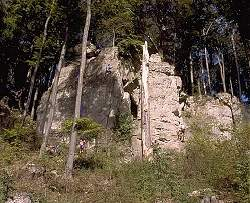

| In English |
| In English |
Der Ith und Umgebung
| Bild: der Ith von Westen. |
Südlich von Hildesheim geht die Norddeutsche Tiefebene, die vor allem aus tertiären Ablagerungen besteht, in eine hügelige Lanschaft mit bewaldeten Bergzügen über. Diese tragen so bekannte Namen wie Sieben Berge (aus dem Märchen
Jeder dieser Bergzüge stellt eine Schichtrippe dar. Das bedeutet, dass die Schichten hier senkrecht gestellt sind. Die weicheren Schichten sind verwittert und abgetragen, die harten sind als Höhenzüge stehen geblieben. Dabei entspricht die Breite der Höhenzüge und der Täler, der Mächtigkeit der entsprechenden Schicht.
Höhlen im Ith
| Bild: Eine Spaltenhöhle mit interessantem Profil. |
| Ort: | A7 Ausf Hildesheim, B1 34km über Elze bis Salzhemmendorf-Hemmendorf, nach S 21km über Salzhemmendorf bis Eschershausen, lins ab 2km nach Holzen, in Holzen Beschilderung zum Berg-Cafe, dann noch 500 m Kiesweg bis zum Parkplatz. (36,Ke37) |
| Öffnungszeiten: | |
| Eintrittspreise: | |
| Typ: | Klufthöhlen, z.T. küstlich, Dolomit. |
| Licht: | keines |
| Dimension: | L=30m, GR: L=3m, B=3m, H=2m. |
| Führungen: | |
| Fotografieren: | |
| Zugänglichkeit: | |
| Literatur: | Die archäologischen Funde aus den Ith-Höhlen, Hrsg: Braunschweigisches Landesmuseum, Abt. Archäologie, Kanzleistr. 3, W-3340 Wolfenbüttel, in Zusammenarbeit mit: Landesmuseum Hannover, Landkeis Holzminden, Roemer- und Pelizaeus-Museum Hildesheim. |
| Adresse: | |
| Nach unserem Wissen sind die Angaben für das in eckigen Klammern angegebene Jahr korrekt. Allerdings können sich Öffnungszeiten und Preise schnell ändern, ohne daß wir benachrichtigt werden. Bitte prüfen Sie bei Bedarf die aktuellen Werte beim Betreiber, zum Beispiel auf der offiziellen Website in der Linkliste. | |
| Stand: | $Date: 2015/11/20 13:24:31 $ |
Bemerkungen
|  |
| Bild: Kletterfelsen am Ith oberhalb der Ortschaft Holzen. |
Die Felsen des Ith sind ein beliebtes Klettergebiet. In diesen Felsen befinden sich eine große Anzahl von kleinen und kleinsten Höhlen, die nur für geübte Kletterer und mit Vorsicht zu befahren sind. Bemerkenswert sind sie vor allem wegen der großen Zahl der hier gemachten Funde, die von der Steinzeit bis ins Mittelalter reichen. Sie werden deshalb meist als Kulthöhlen bezeichnet.
Die Höhlen tragen Namen wie Nasensteinhöhle, Rothesteinhöhle, Soldatenhöhle, Töpferhöhle, Kinderhöhle und Teufelsküche. In der Regel handelt es sich um kleine Spaltenhöhlen, gerade groß genug, um aufrecht zu stehen und wenige Meter lang. Manche sind nicht viel mehr als Felsdächer.
Der Besuch dieser Höhlen selbst lohnt sich eigentlich nicht, viel interessanter ist ein Besuch der Archäologischen Abteilung des Braunschweigischen Landesmuseums in Wolfenbüttel. Hier sind die gemachten Funde nach modernsten Gesichtspunkten ausgestellt.
 Ith - Wikipedia
Ith - Wikipedia ..::** Höhlengruppe Nord e. V. **::.. Artikel - Exkusion mit dem NDR. - -
..::** Höhlengruppe Nord e. V. **::.. Artikel - Exkusion mit dem NDR. - -{kind=link}
{kind=link}
{kind=link}